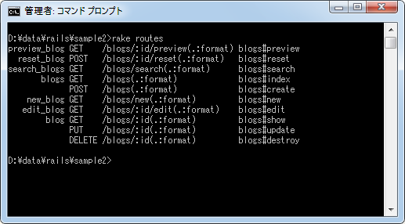
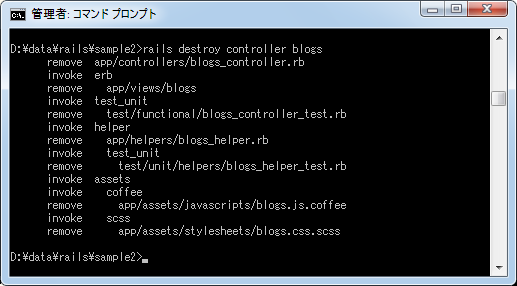
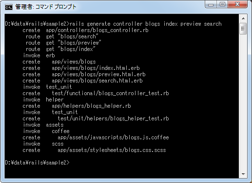
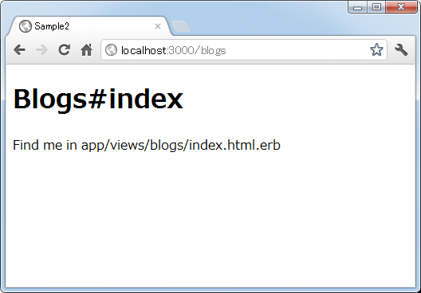
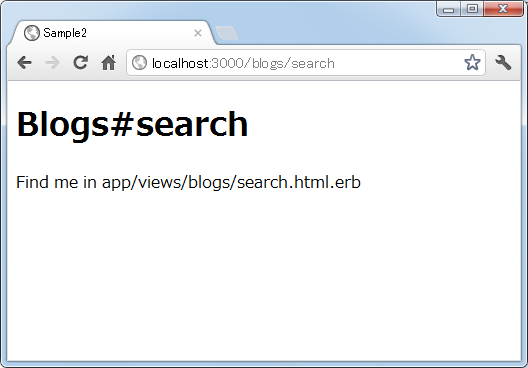
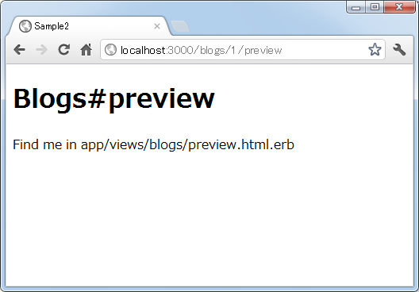

ルーティングにアクションを追加
リソースベースのルーティングの場合、自動で7つのアクションを呼び出すためのルーティングが設定されますが、7つのアクションだけしか利用できないわけではなく他のアクションを追加することも可能です。ここではアクションを追加する方法について解説します。
アクションの追加
リソースベースのルーティングでは「index」「show」「new」「edit」「create」「update」「destroy」の7つのアクションへのルーティング自動で設定されます。これに別のアクションを呼び出すためのルーティングを追加することもできます。「config/routes.rb」ファイルにサンプルが記載されています。
Sample2::Application.routes.draw do # Sample resource route with options: # resources :products do # member do # get 'short' # post 'toggle' # end # # collection do # get 'sold' # end # end end
書式は次のとおりです。
resources :リソース名 do
member do
HTTPメソッド名 'アクション名'
end
collection do
HTTPメソッド名 'アクション名'
end
end
追加するアクションを member ブロック又は collection ブロック内に記述します。この2つのブロックの違いは member ブロックの方は特定のデータを対象としたアクションを記述し、collection ブロックには全てのデータを対象としたアクションを記述します。member ブロックの方に記述したアクションに対してはリクエストでIDパラメータを指定する必要があります。
では今回ルーティングの設定として「config/routes.rb」ファイルをテキストエディタで開き、次のように記述しました。
Sample2::Application.routes.draw do
resources :blogs do
member do
get 'preview'
post 'reset'
end
collection do
get 'search'
end
end
end
そして「rake routes」を実行して設定されたルーティングを確認してみます。

上の3つが追加されたルーティングで次のようになっています。
GET 'blogs/:id/preview' => 'books#preview' POST 'blogs/:id/reset' => 'books#reset' GET 'blogs/search' => 'books#search' GET 'blogs' => 'books#index' POST 'blogs' => 'books#create' GET 'blogs/new' => 'books#new' GET 'blogs/:id/edit' => 'books#edit' GET 'blogs/:id' => 'books#show' PUT 'blogs/:id' => 'books#destroy' DELETE 'blogs/:id' => 'books#update'
member ブロックに記述した「preview」と「reset」はリクエストのURLの中で「id」パラメータが必要となっているのが分かります。
別の記述方法
アクションを追加する場合、先程の書式とは別に次のように記述することもできます。
resources :リソース名 do HTTPメソッド名 'アクション名', :on => :member HTTPメソッド名 'アクション名', :on => :collection end
例えば先程と同じアクションを追加する場合は次のように記述します。
Sample2::Application.routes.draw do
resources :blogs do
get 'preview', :on => :member
post 'reset', :on => :member
get 'search', :on => :collection
end
end
どちらの記述方法でも同じです。
動作確認
それでは実際に試してみます。「sample2」アプリケーションに「blogs」コントローラが作成されていたので、いったん削除します。

その後で改めて「blogs」コントローラを作成し、さらに「index」「preview」「search」アクションをを作成します。

ルーティングの設定として「config/routes.rb」ファイルをテキストエディタで開き、次のように記述しました。
Sample2::Application.routes.draw do
resources :blogs do
member do
get 'preview'
post 'reset'
end
collection do
get 'search'
end
end
end
それでは準備ができましたのでRailsアプリケーションを起動して下さい。そしてまずブラウザから「http://localhost:3000/blogs」へアクセスして下さい。すると次のように「index」アクションが呼び出されます。

では追加したアクションを呼び出してみます。「http://localhost:3000/blogs/search」へアクセスして下さい。すると次のように「search」アクションが呼び出されます。

続いて「http://localhost:3000/blogs/1/preview」へアクセスして下さい。すると次のように「preview」アクションが呼び出されます。

このようにパラメータを必要とするアクションや必要としないアクションに対するルーティングをリソースベースのルーティングに追加することができました。
( Written by Tatsuo Ikura )

著者 / TATSUO IKURA
初心者～中級者の方を対象としたプログラミング方法や開発環境の構築の解説を行うサイトの運営を行っています。